Project Report
Motivation
The topic of shooting incidents worldwide raises concerns about the safety and security of various communities. On the afternoon of Nov. 6, 2023, the alert system of New York University, issued an emergency alert that a shooting had occurred in the Tandon neighborhood, advising people to “run if you can run, hide if you can’t run, and duel if you can’t hide.” This specific case involving an NYU student underscores the need for increased awareness and preventive measures within educational institutions. Many schools are tasked with ensuring the safety of their students, making it essential to address and mitigate potential threats.
Shootings in schools are not an isolated problem. It affects the entire school community, and its impact extends beyond the individual case of New York University to include educational institutions and industries throughout the New York area. Beyond the school gates, shootings cast a shadow over the workplace, impacting employee safety and productivity. Shootings instill fear in employees and negatively impact the overall workplace culture. Addressing the root of the problem is critical to maintaining a thriving workforce. Other public spaces and cultural venues are an important part of New York and are not immune to the threat of gun violence. Concert halls, theaters, and recreational areas have all become potential targets. Protecting these spaces requires a collective commitment to implementing safety measures, promoting community engagement, and addressing the social factors that contribute to violence.
Overall, the motivation to address these interconnected issues lies in the shared goal of creating safer, more vibrant communities and environments for individuals to thrive.
Initial Questions
- Are shootings affected by seasonal differences?
- Do male victimization rates vary by region?
- What will be the trend in the future of shooting incident?
Data sources
Shooting Incident from 2006 to 2022 dataset
We choose the NYPD Shooting Incident Dataset as our main dataset in our study. This shooting incident datasets contain every shooting incident that occurred in NYC with years ranging from 2006 to 2022. Each record represents a shooting incident in NYC and includes information about the event, the location and time of occurrence. In addition, information related to suspect and victim demographics is also included.
# Read shooting Incident from 2006 to 2022
NYPD_Shooting_Incident_2006_2022 =
read_csv("data/NYPD_Shooting_Incident_Data__Historic__20231120.csv") |>
janitor::clean_names() |>
select(-lon_lat,
-statistical_murder_flag)There are a total of 21 variables.
INCIDENT_KEY: Randomly generated persistent ID for each arrest.OCCUR_DATE: Exact date of the shooting incident.OCCUR_TIME: Exact time of the shooting incident.BORO: Borough where the shooting incident occurred.LOC_OF_OCCUR_DESC:Location of the shooting incident(OUTSIDE, INSIDE)PRECINCT: Precinct where the shooting incident occurred.JURISDICTION_CODE: Jurisdiction where the shooting incident occurred. Jurisdiction codes 0(Patrol), 1(Transit) and 2(Housing) represent NYPD whilst codes 3 and more represent non NYPD jurisdictions.LOC_CLASSFCTN_DESC: Location of the shooting incident(STREET, HOUSING, COMMERCIAL, DWELLING, OTHER)PERP_AGE_GROUP: Perpetrator’s age within a category.PERP_SEX: Perpetrator’s sex description.PERP_RACE: Perpetrator’s race description.VIC_AGE_GROUP: Victim’s age within a category.VIC_SEX: Victim’s sex description.VIC_RACE: Victim’s race description.X_COORD_CD: Midblock X-coordinate for New York State Plane Coordinate System, Long Island Zone, NAD 83, units feet (FIPS 3104).Y_COORD_CD: Midblock Y-coordinate for New York State Plane Coordinate System, Long Island Zone, NAD 83, units feet (FIPS 3104).Latitude: Latitude coordinate for Global Coordinate System, WGS 1984, decimal degrees (EPSG 4326).Longitude: Longitude coordinate for Global Coordinate System, WGS 1984, decimal degrees (EPSG 4326).Lon_Lat: Longitude and Latitude Coordinates for mapping.
Shooting incident data for 2023
- This dataset list of every shooting incident that occurred in NYC during the current calendar year. As a supplement to the primary dataset, this dataset added 2023 shooting incidents up to September. Each record represents a shooting incident in NYC and includes information about the event, the location and time of occurrence. In addition, information related to suspect and victim demographics is also included.
# Read shooting incident data for 2023
NYPD_Shooting_Incident_2023 =
read_csv("data/NYPD_Shooting_Incident_Data__Year_To_Date__20231129.csv") |>
janitor::clean_names() |>
select(-new_georeferenced_column, -statistical_murder_flag)- There are a total of 21 variables. Out of which, the variables and description we considered are same as the given list above.
Data processing
We bind these two dataste by row, making a longer result for the
whole shooting incidents happened from 2006 to 2023. Separate the year,
month and day in occur_date into three variables. Also,
Separate the hours, minutes, and seconds in “occup_time” into three
variables for subsequent statistical analysis. Remove variables that
will not be used in subsequent statistical analysis of the data:
minute, second,
loc_of_occur_desc, loc_classfctn_desc,
location_desc.
NYPD_Shooting_Incident_cleaned =
bind_rows(NYPD_Shooting_Incident_2006_2022, NYPD_Shooting_Incident_2023) |>
separate(occur_date, into = c("month", "day", "year"), sep = "/") |>
separate(occur_time, into = c("hour", "minute", "second"), sep = ":") |>
select(-minute, -second, -loc_of_occur_desc, -loc_classfctn_desc, -location_desc)Mapping
Mapping New York City
- To provide a more detailed and focused view of New York City, specific geographic limits were defined. The longitude and latitude boundaries were set as follows: Longitude: -74.3 to -73.7; Latitude: 40.5 to 40.9. These limits were chosen to encompass the central area of New York City, ensuring that the map primarily highlights the city itself.
# map
new_york_map <- map_data("state", region = "new york")
# Define limits to focus on New York City
lon_min <- -74.3
lon_max <- -73.7
lat_min <- 40.5
lat_max <- 40.9
ggplot() +
geom_polygon(data = new_york_map, aes(x = long, y = lat, group = group), fill = "lightgray", color = "white") +
coord_fixed(ratio = 1, xlim = c(lon_min, lon_max), ylim = c(lat_min, lat_max)) +
labs(title = "Map of New York City")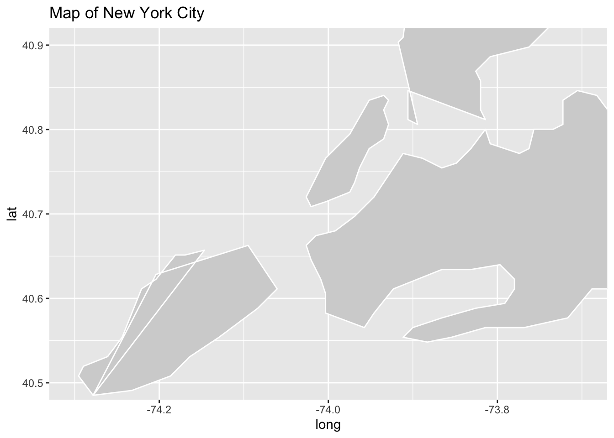
- The maps generated are called “New York City Maps” and effectively show the outlines of geographic areas with light gray fills and white borders.
Mapping New York City with NYPD Shooting Incident Data
ggplot() +
geom_polygon(data = new_york_map, aes(x = long, y = lat, group = group), fill = "lightgray", color = "white") +
geom_point(data = NYPD_Shooting_Incident_cleaned, aes(x = longitude, y = latitude), color = "yellow") +
coord_fixed(ratio = 1, xlim = c(lon_min, lon_max), ylim = c(lat_min, lat_max)) +
labs(title = "Map of New York City with Data Points")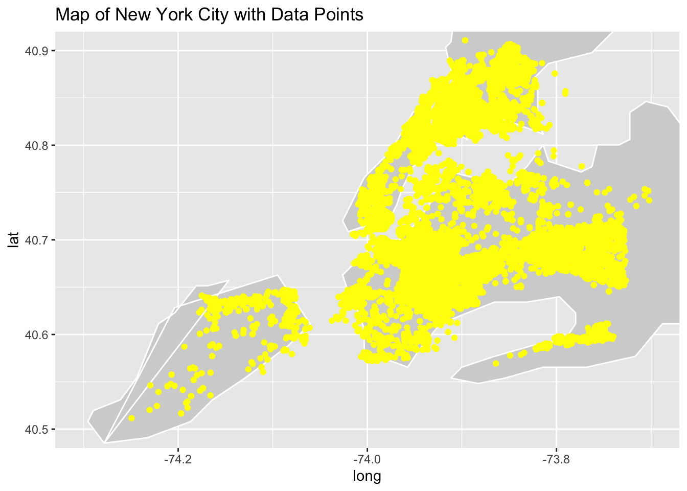
- The map that resulted, entitled “Map of New York City with Data Points,” effective combines the geographic layout of the city with the specific locations of the shootings. The light gray background provides context for the map, while the yellow data points highlight the spatial distribution of shootings in New York City.
Mapping Manhattan
- In order to provide a detailed and centralized view of Manhattan, the map defines specific geographic constraints. The longitude and latitude boundaries are set as follows: Longitude: -74.0479 to -73.79067; Latitude: 40.6829 to 40.8820. These boundaries cover all of Manhattan, ensuring that the map primarily highlights the borough itself.
# map for Manhattan
manhattan_map <- map_data("state", region = "new york")
lon_min <- -74.0479
lon_max <- -73.79067
lat_min <- 40.6829
lat_max <- 40.8820
ggplot() +
geom_polygon(data = manhattan_map, aes(x = long, y = lat, group = group), fill = "lightgray", color = "white") +
coord_fixed(ratio = 1, xlim = c(lon_min, lon_max), ylim = c(lat_min, lat_max)) +
labs(title = "Map of manhattan")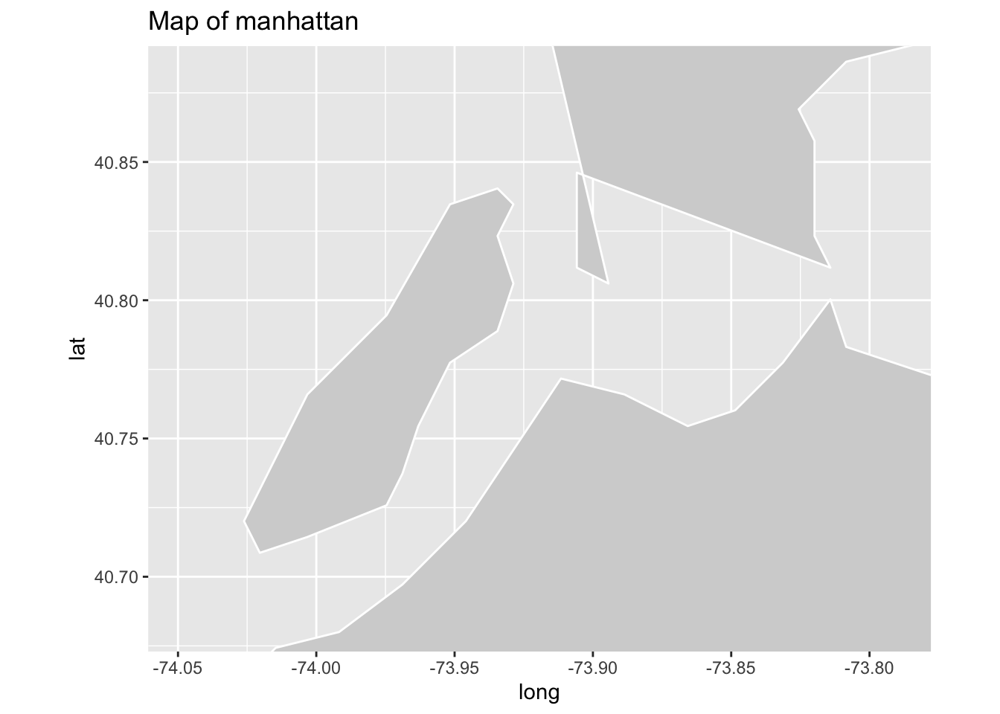
- Generates the “Manhattan Map” that effectively shows the outline of the geographic area with a light gray fill and white border.
Mapping Manhattan with NYPD Shooting Incident Data
manhattan =
NYPD_Shooting_Incident_cleaned |>
filter(boro == "MANHATTAN")
ggplot() +
geom_polygon(data = manhattan_map, aes(x = long, y = lat, group = group), fill = "lightgray", color = "white") +
geom_point(data = manhattan, aes(x = longitude, y = latitude), color = "yellow") +
coord_fixed(ratio = 1, xlim = c(lon_min, lon_max), ylim = c(lat_min, lat_max)) +
labs(title = "Map of Manhattan with Incident Points")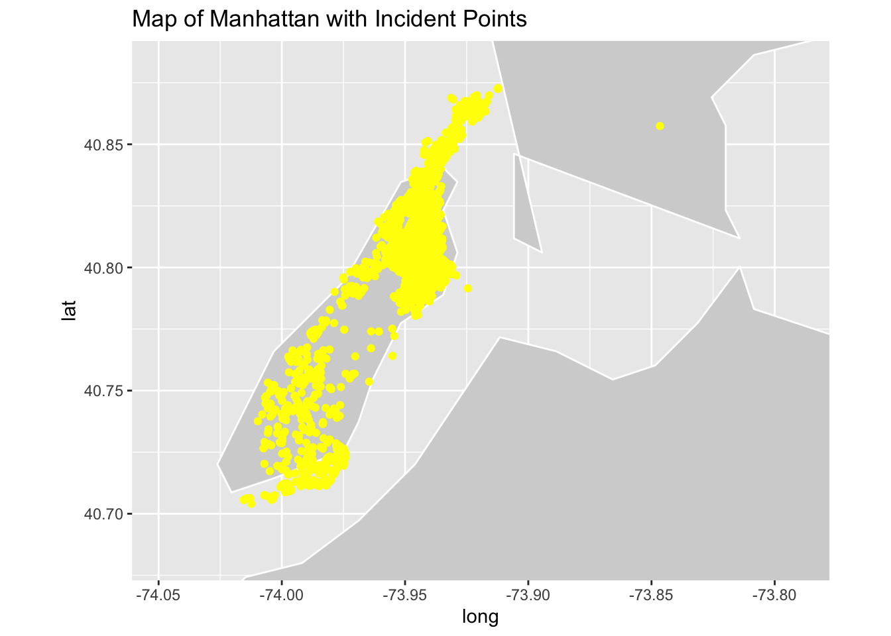
- “Manhattan Map with Event Points” effectively combines the geographic layout of Manhattan with the specific locations of shooting incidents. A light gray background provides context for the map, while yellow data points highlight the spatial distribution of shootings within the borough.
Exploratory Analysis
Regarding time and victimization:
- Presents an analysis of the distribution of NYPD shooting incidents across different time periods. The focus is on understanding when these incidents are more likely to occur during the day.
#incidents rate against the time
incidents_time =
NYPD_Shooting_Incident_cleaned |>
mutate(hour = as.factor(hour)) |>
group_by(hour) |>
ggplot(aes(x = hour)) +
geom_bar() +
labs(x = "Time(hour)", y = "Incidents Numbers", title = "Incidents Distribution of Time Periods")
incidents_time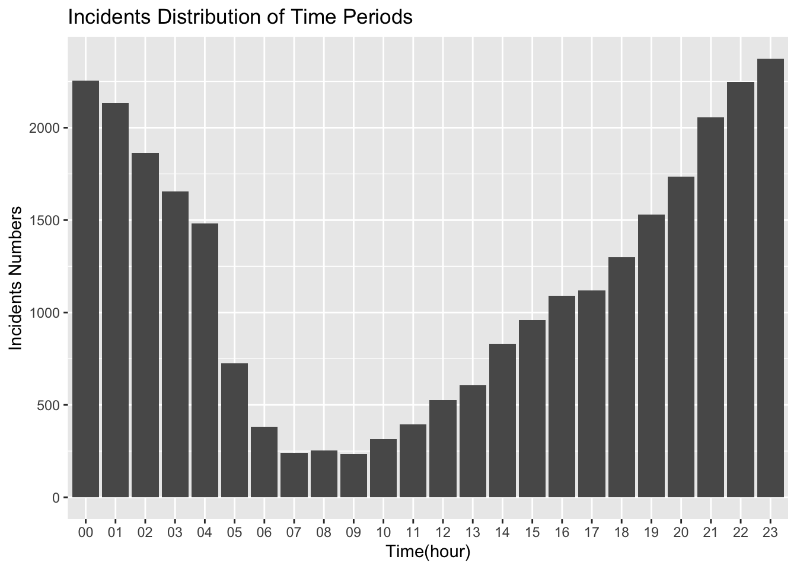
- In this plot, each bar represents a specific hour, and the height of the bar corresponds to the number of shooting incidents during that hour. The x-axis represents the time (hour), and the y-axis represents the count of incidents. From this plot, we can find that the majority of shooting incidents occur during the night, with the highest concentration observed between 21:00 and 23:00. Incidents are notably fewer during the daytime, reaching the lowest point from 7:00 to 9:00 PM. Incident numbers gradually increase throughout the day, reaching a peak during the late-night hours.
Regarding gender and victimization:
- This plot delves into the gender distribution of shooting victims, seeking to understand the gender disparities among individuals impacted by shooting incidents.
#victim gender pie chart
victim_gender =
NYPD_Shooting_Incident_cleaned |>
group_by(vic_sex) |>
distinct(incident_key) |>
summarise(count = n()) |>
mutate(cumulative = cumsum(count),
label_position = cumulative - (0.5 * count)) |>
ggplot(aes(x = "", y = count, fill = vic_sex)) +
geom_bar(width = 1, stat = "identity") +
coord_polar("y", start = 0) +
theme_void() +
scale_fill_brewer(palette = "Dark2") +
labs(title = "Victim Gender Distribution")
victim_gender 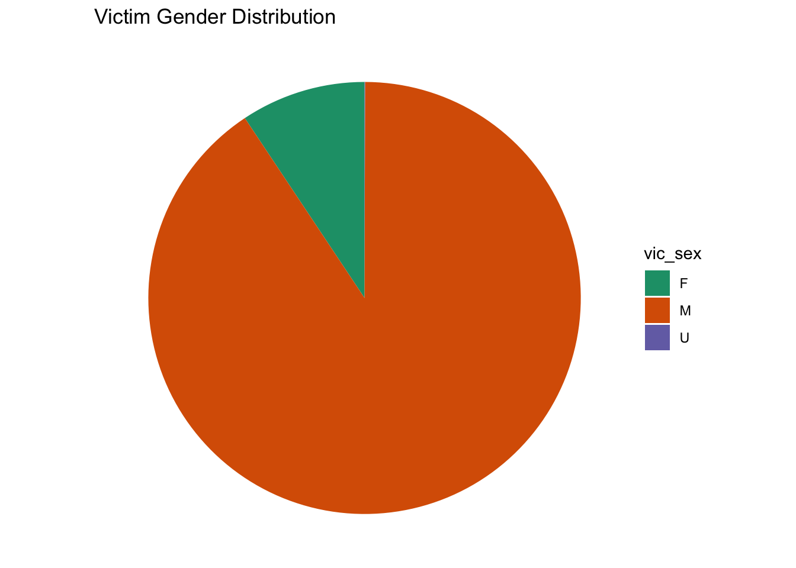
- The plot reveals a substantial gender difference in victimization, with a significantly higher number of male victims compared to female victims. It effectively conveys the gender distribution, showcasing the magnitude of victimization for each gender category.
Regarding age and victimization:
- This plot investigates the age distribution of shooting victims, aiming to identify patterns and disparities across different age groups.
#victim age bar chart
victim_age =
NYPD_Shooting_Incident_cleaned |>
group_by(vic_age_group) |>
distinct(incident_key) |>
summarise(count = n()) |>
mutate(cumulative = cumsum(count),
label_position = cumulative - (0.5 * count)) |>
ggplot(aes(x = "", y = count, fill = vic_age_group)) +
geom_bar(width = 1, stat = "identity") +
coord_polar("y", start = 0) +
theme_void() +
scale_fill_brewer(palette = "Dark2") +
labs(title = "Age Distribution of Shooting Victims")victim_age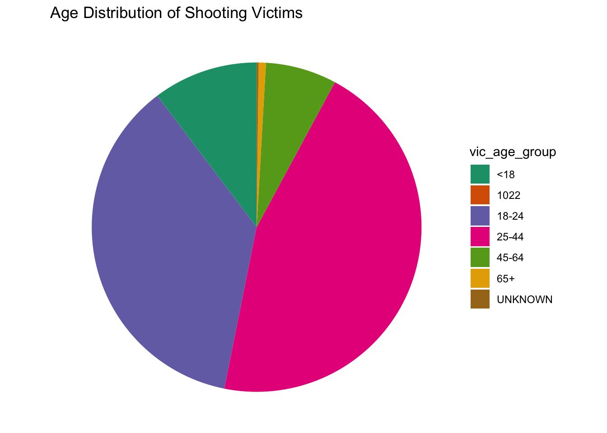
- The plot highlights a significant disparity in victimization among various age groups.Victimization is notably concentrated among young people, with the age group between 25 and 44 experiencing the highest incidence of shooting incidents. There is an outlier at age 1022 observed in the dataset, and it may represent an anomaly or data entry error.
Regarding region and victimization:
- This plot examines the trends in shooting incidents over the years, with a focus on different boroughs in New York City. The analysis employs a line chart to visually represent the number of incidents in each borough across multiple years.
#incidents vs. year, seperated by borough
incidents_year =
NYPD_Shooting_Incident_cleaned |>
group_by(year, boro) |>
summarise(count = n(), .groups = "drop") |>
ggplot(aes(x = year, y = count, group = boro, color = boro)) +
geom_line() +
facet_wrap(~boro) +
labs(
title = "Incidents vs Year",
x = "Year",
y = "Incidents"
)incidents_year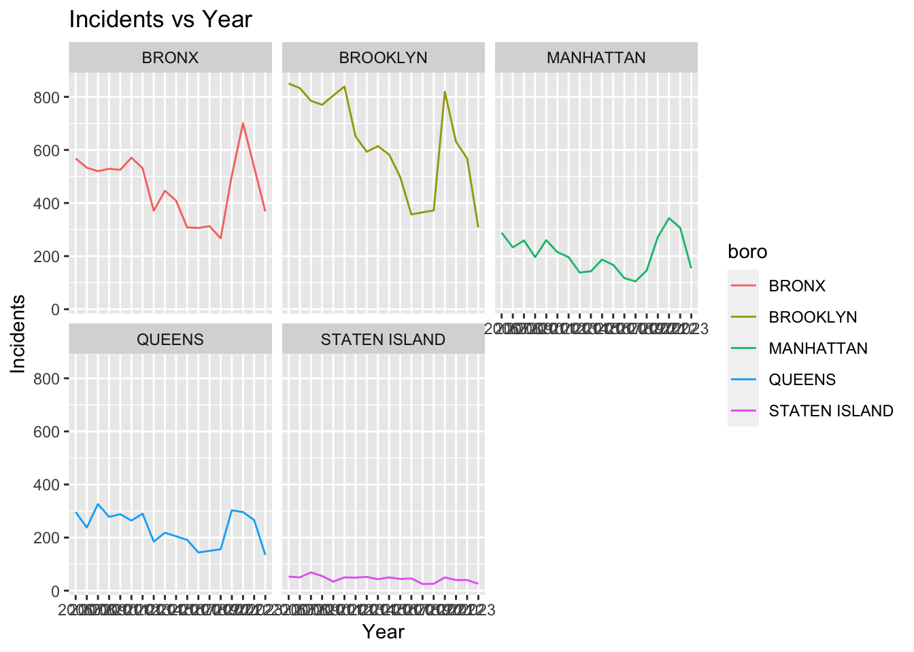
- The number of incidents in Bronx and Brooklyn has been maintained at a high level every year. The overall situation of Manhattan and Queens remains relatively low and stable. But all four borough showed significant declines in 2018-2019, and bounced back in the following year. Compared with other boroughs, Staten Island have the fewer amount of the incidents. The density of data points in Staten Island is significantly lower than in other regions.
Statistical Analysis
Seasonal Comparison of Shooting Incidents
- This statistical analysis aims to investigate whether there are significant differences in the mean number of shooting incidents between seasons in New York City.
- Visualized using bar graphs, the x-axis represents the season (winter, spring, summer, fall), and y-axis represents the number of different shootings in each season. The bar plot provides a visual representation of the distribution of shooting incidents across different seasons.
season =
NYPD_Shooting_Incident_cleaned |>
group_by(month) |>
distinct(incident_key) |>
summarise(count = n()) |>
mutate(season = case_match(
month,
"01" ~ "winter",
"02" ~ "winter",
"03" ~ "spring",
"04" ~ "spring",
"05" ~ "spring",
"06" ~ "summer",
"07" ~ "summer",
"08" ~ "summer",
"09" ~ "fall",
"10" ~ "fall",
"11" ~ "fall",
"12" ~ "winter",
))
season |>
ggplot(aes(x = season, y = count)) +
geom_col()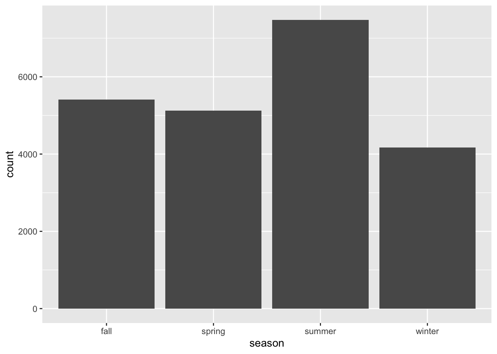
- The largest gaps were found in the summer and winter seasons, which were selected for subsequent analysis.
summer_winter =
NYPD_Shooting_Incident_cleaned |>
group_by(month, year) |>
distinct(incident_key) |>
filter(!year == 2023) |>
summarise(count = n()) |>
mutate(season = case_match(
month,
"01" ~ "winter",
"02" ~ "winter",
"03" ~ "spring",
"04" ~ "spring",
"05" ~ "spring",
"06" ~ "summer",
"07" ~ "summer",
"08" ~ "summer",
"09" ~ "fall",
"10" ~ "fall",
"11" ~ "fall",
"12" ~ "winter",
)) |>
select(-year) |>
ungroup() |>
filter(season %in% c("winter", "summer"))
summer =
summer_winter |>
filter(season == "summer") |>
select(count)
winter =
summer_winter |>
filter(season == "winter") |>
select(count)
summer_winter_after =
bind_cols(summer, winter) |>
rename(summer = count...1,
winter = count...2)Summer-Winter Incident Comparison.
Null Hypothesis (H0): There is no difference in mean incident numbers between summer and winter.
Alternative Hypothesis (H1): The mean incident numbers between summer and winter are different. A two-sample z-test was conducted to compare the average of summer and winter shooting incidents.
z_test = z.test(x = summer_winter_after$summer, y = summer_winter_after$winter, sigma.x = sd(summer_winter_after$summer), sigma.y = sd(summer_winter_after$winter))
z_test##
## Two-sample z-Test
##
## data: summer_winter_after$summer and summer_winter_after$winter
## z = 9.4566, p-value < 2.2e-16
## alternative hypothesis: true difference in means is not equal to 0
## 95 percent confidence interval:
## 48.79243 74.30561
## sample estimates:
## mean of x mean of y
## 140.58824 79.03922z-test yielded the following results:
Z value: 9.4566
P-value: < 2.2e-16 (very small, indicating strong evidence against the original hypothesis)
Confidence interval: (48.79, 74.31)
The results of the z-test for both samples indicate that there is a statistically significant difference between the average number of shootings in the summer and winter. p-value is extremely small, providing strong evidence against the original hypothesis. Means that there is a large difference between the average number of shootings in the summer and winter months.
Proportion of Male Shooting Victims in Brooklyn vs. Staten Island.
- This statistical analysis aims to compare the proportion of male shooting victims between the boroughs of Manhattan and Queens in New York City. The goal is to investigate whether there is a significant difference in the proportion of male victims between these two boroughs.
prop_df =
NYPD_Shooting_Incident_cleaned |>
select(boro, vic_sex) |>
group_by(boro, vic_sex) |>
summarize(sum = n())Null Hypothesis (H0): The proportion of male shooting victims in Brooklyn is equal to the proportion in Staten Island.
Alternative Hypothesis (H1): The proportions of male shooting victims in Brooklyn and Staten Island are different. Use a two-sample test for equality of proportions with continuity correction to compare the proportions of male shooting victims in Brooklyn and Staten Island.
num_brook =
prop_df |>
filter(boro == "BROOKLYN")
num_SI =
prop_df |>
filter(boro == "STATEN ISLAND")
num_brook = sum(pull(num_brook, sum))
num_SI = sum(pull(num_SI, sum))
num_brook_male =
prop_df |>
filter(boro == "BROOKLYN") |>
filter(vic_sex == "M") |>
pull(sum)
num_SI_male =
prop_df |>
filter(boro == "STATEN ISLAND") |>
filter(vic_sex == "M") |>
pull(sum)
prop.test(c(num_brook_male, num_SI_male), n = c(num_brook, num_SI))##
## 2-sample test for equality of proportions with continuity correction
##
## data: c(num_brook_male, num_SI_male) out of c(num_brook, num_SI)
## X-squared = 3.4568, df = 1, p-value = 0.06299
## alternative hypothesis: two.sided
## 95 percent confidence interval:
## -0.002741196 0.044648482
## sample estimates:
## prop 1 prop 2
## 0.9024998 0.8815461The test results indicate the following:
X-squared Value: 3.4568
Degrees of Freedom (df): 1
P-Value: 0.06299
Confidence Interval: (-0.0027, 0.0446)
While the p-value is greater than the conventional significance level of 0.05, suggesting that we do not have strong evidence against the null hypothesis. Indicate that the proportions of male victims in Brooklyn and Staten Island are likely to be similar.
Additional analysis - Time Series Model
Data Processing
First, we import the cleaned data into the environment, and grouped the data by year and month. After that, we count the case number of each month and would like to find out that is there any serial autocorrelation. To predict the future data, we still need to conduct some test about the original data.
every_month =
NYPD_Shooting_Incident_cleaned |>
group_by(year,month) |>
summarize(cases_number = n())## `summarise()` has grouped output by 'year'. You can override using the `.groups`
## argument.After that, we draw the plot of the original data. It is clear that we can’t recognize any upward or downward trend in the time series from the graphs. In order to make the model focused more on recent data points, we decided to reduce the training data. Hence，the model would give more weight on the recent data rather than other distant data.
cases_ts =
every_month |>
pull(cases_number)|>
ts(start = c(2006,1), frequency = 12)
plot(cases_ts,
main = "Shooting cases per month",
xlab = "Year",
ylab = "Frequency")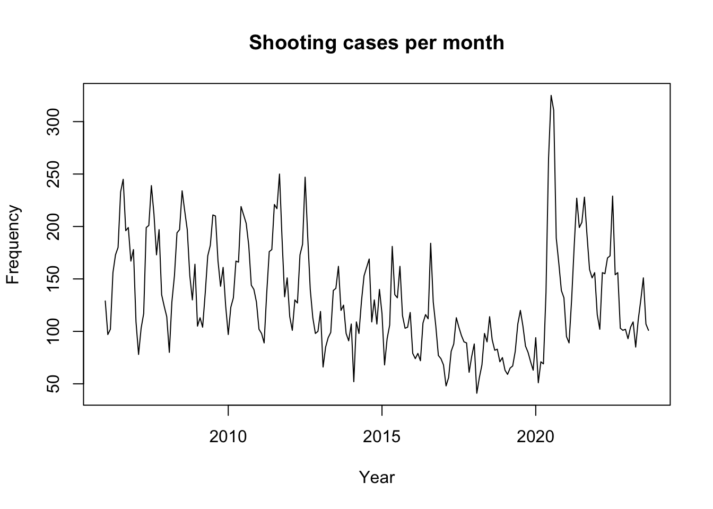
## test model
test_series =
every_month |>
filter(year>=2017) |>
pull(cases_number)
test_series = ts(test_series,start = c(2017,1), frequency = 12)Conducting the test
\(H_{0}\): The data are independently distributed (i.e. the correlations in the population from which the sample is taken are 0, so that any observed correlations in the data result from randomness of the sampling process).
\(H_{1}\): The data are not independently distributed; they exhibit serial correlation.
Box.test(test_series,type = "Ljung",lag = 6)##
## Box-Ljung test
##
## data: test_series
## X-squared = 104.33, df = 6, p-value < 2.2e-16Then, we need to reject the NULL hypothesis and concluded that the exhibit serial correlation, in other words, this series is not a white noise series and it includes some informations which we need. After that, we need to conduct Augmented Dickey-Fuller Test to to examine whether the series is a stationary time series or not. If the series is not stationary then the series is to be stabilized by difference.
\(H_0\):The time series has a unit root, implying that it is non-stationary.
\(H_1\):The time series does not have a unit root, implying that it is stationary.
aTSA::adf.test(test_series)## Augmented Dickey-Fuller Test
## alternative: stationary
##
## Type 1: no drift no trend
## lag ADF p.value
## [1,] 0 -1.048 0.302
## [2,] 1 -1.272 0.221
## [3,] 2 -1.263 0.225
## [4,] 3 -0.958 0.334
## Type 2: with drift no trend
## lag ADF p.value
## [1,] 0 -2.71 0.0812
## [2,] 1 -3.56 0.0100
## [3,] 2 -3.70 0.0100
## [4,] 3 -2.90 0.0512
## Type 3: with drift and trend
## lag ADF p.value
## [1,] 0 -2.83 0.2341
## [2,] 1 -3.79 0.0234
## [3,] 2 -4.05 0.0118
## [4,] 3 -3.24 0.0876
## ----
## Note: in fact, p.value = 0.01 means p.value <= 0.01From the above test result, we can clear in the model of no drift and no trend, all the p-value is greater than the given alpha (\(\alpha=0.05\)), as a result, we have strong evidence to prove that this series does not have a unit root and concluded that it’s a stationary series.
acf(test_series, lag.max = 20)
pacf(test_series)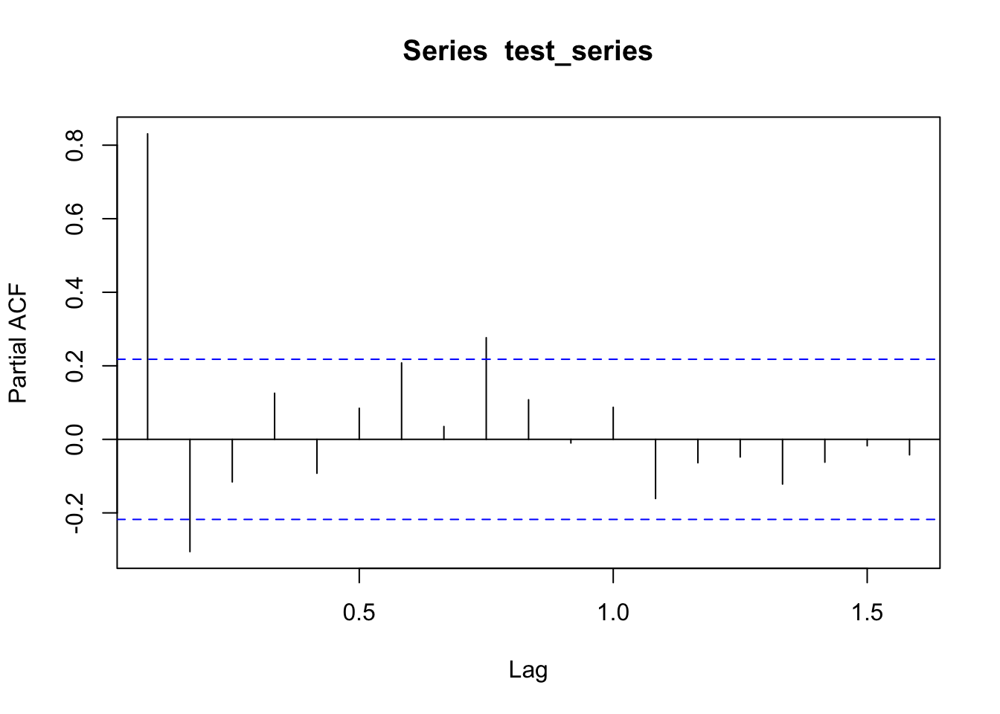
decomposed =
decompose(test_series,
type = "additive")
plot(decomposed)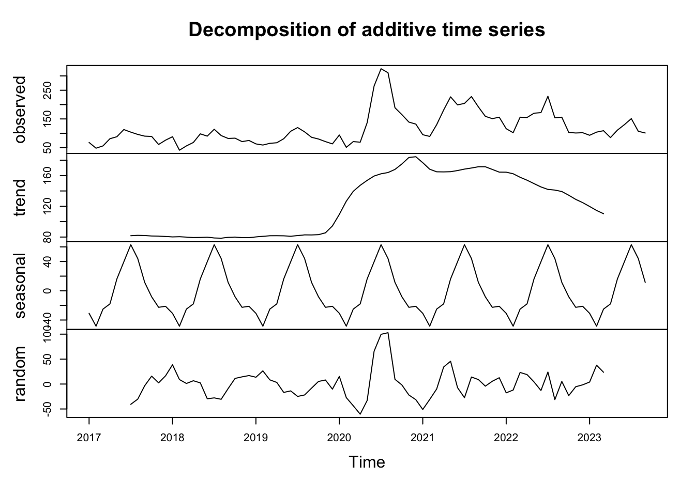
As the normal time-series prediction procedure requested, we also made the plot of autocorrelation function(ACF) and partial autocorrelation function(PACF) to help us know more about this series. What’s more, we deceided to decomposed the series by additive method according to the existing feature to this series. From the decomposed graph, we can clearly know that it has a strong seasonality which is periodic and generally regular and predictable changes that occur over a year. Compared to the period when we were undergoing the global pandemic of Covid-19(2020-2022), we can clearly see a downward trend in the number of cases.
Grid Research via For Loop
After that, all of us prefer to use the Holtwinter to forecast the series which is a way to model three aspects of the time series: a typical value (average), a slope (trend) over time, and a cyclical repeating pattern (seasonality).
As a result, we need to find out the best parameter for this model. Then, we wrote a function about building a model with different parameters and tried to evaluate the model validity by calculating the root of the mean of the squared errors between the predicted and actual values.
holtwinters_rmse = function(alpha, beta, gamma, df) {
fit = HoltWinters(df, alpha = alpha, beta = beta, gamma = gamma)
forecast_values = forecast::forecast(fit, h = length(df))
actual_values =
as.numeric(df)
forecasted_values =
as.numeric(forecast_values$mean)
rmse = sqrt(mean((actual_values - forecasted_values)^2, na.rm = TRUE))
return(rmse)
}Special Optimization About the Loop
To make it easier, we use the expand.grid to list all
the possible combinations in a data frame to reduce the loop layers. In
this way, we can siginificantly improve the efficiency of this
simulation process. We also try to facilitate this idea from the grid
research to find out the best parameter of alpha, beta and gamma with
the step size of 0.1.
beta_range = gamma_range = seq(0, 1, 0.1)
alpha_range = seq(.1,1,.1)
param_combin = expand.grid(alpha = alpha_range,
beta = beta_range,
gamma = gamma_range)
best_params = NULL
best_rmse = Inf
for (i in 1:nrow(param_combin)) {
params = param_combin[i, ]
rmse = holtwinters_rmse(params$alpha,
params$beta,
params$gamma,
test_series)
if (rmse < best_rmse) {
best_rmse = rmse
best_params = params
}
}
print(
sprintf("The best parameters of Holtwinters - Alpha: %.2f, Beta: %.2f, Gamma: %.2f",
best_params$alpha,
best_params$beta,
best_params$gamma))## [1] "The best parameters of Holtwinters - Alpha: 0.30, Beta: 0.50, Gamma: 0.10"print(
sprintf("Best RMSE: %.4f",
best_rmse))## [1] "Best RMSE: 53.9833"Using the Best Holtwinter Model to Predict
Using the best parameter, we can predict the number of cases for the next 12 months and plot the result.
HW_best =
HoltWinters(test_series,
alpha = pull(best_params , alpha),
beta = pull(best_params , beta),
gamma = pull(best_params , gamma))
HW_fitted = as.data.frame(fitted(HW_best))
HW_best_forward =
forecast(HW_best, h = 12) |>
janitor::clean_names()
plot(x= test_series,
ylab = "Case Number of each month",
xlim = c(2017,2025),
ylim = range(0,HW_best_forward$upper[,2]))+
lines(HW_best$fitted[,1],
col = "blue", lty = 2)+
lines(HW_best_forward$mean,
lty=2, col = "red")+
lines(HW_best_forward$upper[,2],
col = "orange")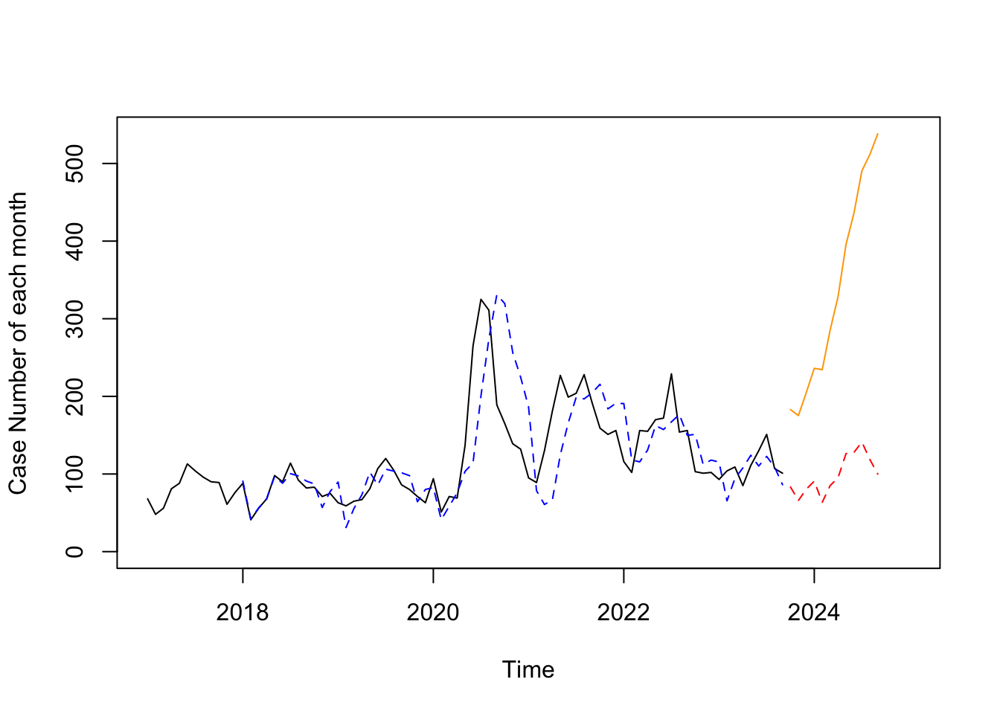
## integer(0)HW_best_forward |>
knitr::kable()| Point Forecast | Lo 80 | Hi 80 | Lo 95 | Hi 95 | |
|---|---|---|---|---|---|
| Oct 2023 | 83.24859 | 18.0435856 | 148.4536 | -16.47386 | 182.9711 |
| Nov 2023 | 65.87944 | -5.6234394 | 137.3823 | -43.47477 | 175.2336 |
| Dec 2023 | 80.54964 | -0.9566185 | 162.0559 | -44.10343 | 205.2027 |
| Jan 2024 | 90.77172 | -4.2800928 | 185.8235 | -54.59749 | 236.1409 |
| Feb 2024 | 63.53055 | -48.1776428 | 175.2387 | -107.31239 | 234.3735 |
| Mar 2024 | 85.06583 | -45.9540612 | 216.0857 | -115.31180 | 285.4435 |
| Apr 2024 | 95.32296 | -57.2832285 | 247.9292 | -138.06807 | 328.7140 |
| May 2024 | 126.34651 | -49.8277273 | 302.5207 | -143.08873 | 395.7817 |
| Jun 2024 | 127.88393 | -73.6195979 | 329.3874 | -180.28912 | 436.0570 |
| Jul 2024 | 141.15946 | -87.2675650 | 369.5865 | -208.18953 | 490.5084 |
| Aug 2024 | 118.74091 | -138.0749572 | 375.5568 | -274.02507 | 511.5069 |
| Sep 2024 | 99.94005 | -186.6283623 | 386.5085 | -338.32852 | 538.2086 |
Comment
As you can see from the above the graph, the original series is in the color of black. Then, the blue line is the fitted value by Holtwinter modeling. After that, the red line is the predicted value and the orange one is the the 95% upper limit of the prediction.
According to the shape of this prediction, we can clearly know that the case number will drop after September 2023 and peaks at the middle of next year considering seasonality. In such circumstance, we suggest that the police station should minimize the likelihood of shootings in the precinct by increasing the number of patrols and the number of patrols conducted before August of 2024.
Discussion
At first, we explored the temporal patterns and victim demographics. The analysis of shooting incidents over time reveals a concentration during nighttime hours, with the peak occurring between 21:00 and 23:00. The examination of gender and age distribution among victims highlights the disproportionate impact on young individuals, particularly those between the ages of 25 and 44. Understanding these demographics can aid in targeted prevention and intervention strategies. To visualize the data, we processed the data for geographic distribution and mapping. The visual representation of shooting incidents on maps provides a clear understanding of the spatial distribution. The focus on both New York City and Manhattan allows for targeted interventions in high-risk areas. The analysis of shooting incidents across different boroughs reveals variations in trends. This information can guide law enforcement agencies and policymakers in implementing borough-specific strategies.
Limitations
The dataset we used might be subject to reporting biases or underreporting, affecting the accuracy of temporal patterns and demographic insights. It is crucial to consider potential discrepancies in reporting practices across different regions or time periods. The presence of outliers, such as the age group “1022,” needs further investigation. Anomaly detection and data cleaning techniques should be applied to ensure the reliability of demographic insights.
Also, the dataset’s geographic coordinates might not capture fine-grained details, such as specific neighborhoods or block-level information. High-resolution mapping could enhance the precision of spatial analyses. While geographic analysis identifies areas with high incident rates, it does not establish causation. Additional factors, such as socio-economic conditions and community dynamics, should be considered for a comprehensive understanding.